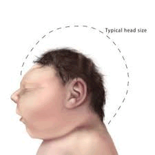
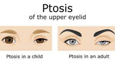
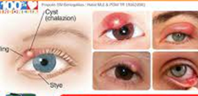
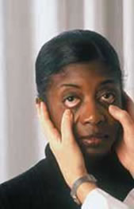
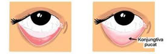
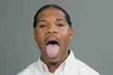

Pemeriksaan Kepala
Pemeriksaan Kepala dan Leher
Pemeriksaan :
1. Warna rambut
2. Kualitas rambut : mudah dicabut/rontok atau dan tidak mudah dicabut
3. Ketebalan dan distribusi rambut merata atau tidak
4. Alopesia (botak), parasit (kutu rambut)
Cara Kerja :
1. Inspeksi
2. Palpasi
3. Palpasi dan inspeksi
4. Inspeksi
Gambar :

Jenis Alopesia

Pemeriksaan
1. Bentuk kepala : microcephalus, macrochepalus
2. Ketombe
3. Seborrhoe (borok)
4. Lesi : tidak ada, lesi terbuka atau tertutup
5. Cicatrix, luka, massa
Cara kerja
1. Inspeksi
Gambar


Pemeriksaan :
1. Wajah: kesimetrisan, pergerakan ,ekspresi, pigmentasi, acne, tiks dan skar
2. Hidrasi kulit dahi : finger print : dehidrasi/tidak
Cara Kerja
1. Inspeksi wajah
2. Palpasi : tekan dahi dengan ibu jari apakah kembali <2 dtk
Gambar

Kesimetrisan wajah : simetris VS tidak simetris contoh pada Bell’s palsy
Pemeriksaan :
1. Alis mata : simetris/tidak, ada diatas mata
2. Bulu mata : simetris/tidak, distribusi
3. Kelopak mata : posisi, edema, ptosis/tidak, hordeolum/tidak,lagopthalamus/tidak
Cara Kerja :
- Insepksi

Contoh Gambar Ptosis

Contoh Gambar Hordeolums
4. Bola mata : letak, dalam/cekung, menonjol (exopthalamus)
Cara Kerja :
- Insepksi
 >
>
Contoh Gambar Exopthalmus
<===============================================================>
Pemeriksaan
5. Conjunctiva : warna, ada peradangan atau tidak Cara memeriksa conjunctiva :
Anjurkan pasien untuk melihat lurus ke depan Tarik kelopak mata bagian bawah dengan menggunakan ibu jari dan amati keadaan konjungtiva
Cara Kerja :
Inspeksi mata
Alat yang dibutuhkan : - Bahan bacaan/ snellen chart, - Lampu Senter/penlight Pelaksanaan, - Inspeksi mata.
Konjutiva Normal Vs tdk normal

6. Sklera : warna (Normal :putih dan jernih/ tidak normal kuning)
7. Pupil : bentuk, ukuran (normal : isokor/tidak mormal : anisokor), warna, reaksi pupil (normal : miosis/tidak normal midriasis)
Gambar :

- Tutup salah satu mata pasien
- Sinari mata yang tidak ditutup dengan penlight/lampu senter
- Pada keadaan gelap makan pupil akan midriasis/membesar
- Pada keadaan terang maka pupil akan miosis/mengecil
Ketajaman penglihatan anjurkan pasien untuk membaca/menebak gambar dalam jarak baca (30 cm) dimana sebelumnya dikaji apakahpasien menggunakan kacamata atau tidak dan ditanya apakah pasien bisa membaca/tidak
Gambar :
9. Pergerakkan bola mata : nygtagmus (gerakan bola mata ireguler)
-
Cara inspeksi gerakan mata :
- Pasien berdiri/ duduk berhadapan dengan pemeriksa
- Tutup mata klien sebelah
- Instruksikan pasien mengikuti pergerakkan jari/pulpen pemeriksa pada jarak 15-30 cm sambil kepala tegak dan tidak bergerak
- Gerakkan jari ke 8 arah, kemudian kembali ke titik tengah dan gerakkan kearah superior 500, temporal 900, nasal 600, inferior 700
- Gerakan jari tidak boleh terlalu cepat
- Normal : pergerakkan bola mata tanpa adanya nystagmus (gerakan bola mata ireguler)
- Bila ditemukan nystagmus maka amati frekuensi (cepat/lambat)
10. Nyeri mata/tidak, tekanan bola mata (intraokuler/TIO)
Pemeriksaan :
1) Ukuran, bentuk dan lesi : ukuran kedua telinga sama, posisi pina sejajar dengan sudut mata
Cara Kerja :- Inspeksi telinga luar
- Palpasi telinga luar dan process mastoid
Gambar
2) Pinna : simetris, bentuk, warna, lesi, ada massa/tidak
Gambar
3) Aurikel : bengkak, lesi
4) Mastoid : bengkak (bila ada peradangan
Gambar :

Palpasi Telinga
5) Inspeksi canalis/saluran telinga (menggunakan otoskop)- Pegang bagian pinggir daun telinga dan secara perlahan-lahan tarik daun telinga ke atas dan ke belakang
- Masukkan otoskop yang menyala secara perlahan ke dalam lubang telinga
- Amati adanya serumen, membrane timpani (intact, warna), reflex cahaya polizer
Gambar :
Inspelsi saluran canalis
6) Tes fungsi pendengaran : gesekan jari-jari tangan- Pemeriksa berdiri di belakang pasien
- Suruh pasien menyatakan apakah mendengar gesekan jari-jari tangan
- Atur frekuensi (cepat/lambat) gesekan tangan
Pemeriksaan Luar Hidung :
- Bentuk : simetris/tidak
- Inspeksi ada/tidak pernafasan cuping hidung, passage udara
- Inspeksi hidung bagian dalam
- Membran mukosa : warna
- Septum : posisi
- Sinus maksilaris, sphenoid, frontalis, etmoidalis, perhatikan adanya nyeri tekan
- Deformitas/deviasi septum
Gambar :
Gambar :
Inspeksi lubang hidung
Gambar :
Pemeriksaan sinus frontalis
Pemeriksaan sinusmaxilris
- Pasien diberikan bau-bau yang berbeda misalnya kayu putih, kopi, kulit jeruk, dll
- Caranya dengan memberitahukan klien untuk menutup mata, kemudian tutup salah satu lubang
- hidung dan dekatlah salah satu bau-bauan yang telah disiapkan, suruh klien menyebutkan
- bau yang didekatkan pada lubang hidung klien, ulangi untuk lubang hidung yang lain
Cara Kerja :
Inspeksi bagian luar
Pemiksaan penciuman
Pemeriksaan Mulut :
- Bibir : warna, ulkus, lesi dan massa
- Gigi : sisa makanan/tidak, karies (jumlah), jumlah gigi
- Lidah : lurus, bersih, warna ulkus
- Mukosa : warna, kelembapan, lesi, berdarah
- Bau mulut : stomatitis (radang mukosa), apthae (sariawan)
- Uvula : simetris/tidak
- Tonsil, menggunakan tangue spatel
- Kemampuan menggigit, mengunyah, menelan, dan mengecap
- Pemeriksaan fungsi pengecapan: Minta pasien untuk menjulurkan lidahnya, beri rasa manis (gula) pada ujung lidah, atau rasa asin (garam) pada samping depan lidah, rasa pahit pada pangkal lidah, dan rasa asam pada samping belakang lidah, tanyakan pada pasien bagaimana rasanya.
Gambar :
Inspeksi mulut
Gambar :

Pemeriksaan lidah
Grade tonsil
0 : bila sudah operasi
+1 : ukuran normal yang ada
+2 : pembesaran tonsil tidak sampai garis tengah
+3 : pembesaran mencpai garis tengah
+4 : pembesaran melewati garis tengah
Gambar :
Gambar :
Pemeriksaan Kulit Leher :
1. ROM (Range of Motion), kemampuan melakukan pergerakkan bagian persendian dengan sempurna tanpa hambatan
Gambar :
Keterangan :Pemeriksaan range of motiom pada leher
2. Trachea : posisi ditengah tyroid
3. Kelenjar tyroid : ada atau tidak ada pembesaran kelenjar tyroid
4. Pemeriksaan kelenjar tyroid:- Pemeriksaan berdiri menghadap pasien
- Gunakan ibu jari dan telenjuk untuk meraba kelenjar tyroid dibawah cartilage cricoids dan suruh pasien menelan
- Keadaan normal tidak teraba pembesaran kelenjar tyroid pada saat pasien menelan
- Tidak terasa nyeri saat diraba
Gambar :

Pemeriksaan kelenjar thyroid dan kelenjar lymp
5. Kelenjar limphe : ada atau tidak ada pembesaran kelenjar
6. Pemeriksaan JVP, normalnya 5-2 cmH2O- Pasein dibaringkan dengan bantal pada kepala (450).
- Bendunglah daerah supra clavicula agar vena juguralis tampak jelas.
- Kemudian tekan ujung proximal vena juguralis (di dekat Angulus mandibulae) sambil melepas bendungan di supraclavicula.
- Amati tingginya kolom darah yang ada. Ukurlah jarak vertical permukaanatas kolom darah yang ditemukan terhadap bidang horizontal yang melalui Angulus Ludovici.
Gambar :
Keterangan :
Pemeriksaan JVPDropdown content#1